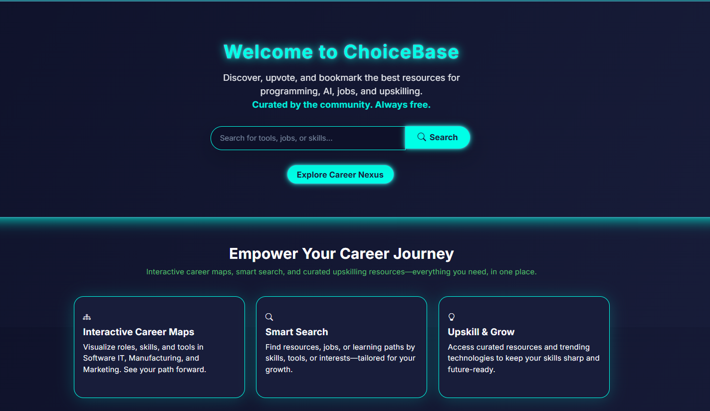

Projects, Solutions & Contributions
A unified showcase of enterprise multi-cluster platform case studies (handling 100+ TB across 5M+ tables), published open-source software, and developer community contributions.
1. Enterprise Production Solutions (Case Studies)
Scale & ArchitectureMulti-Tenant Medallion Lakehouse
End-to-end cloud platform built on Databricks, Fivetran, S3 Auto Loader, and Lakebase handling 100+ TB across 5+ million tables (built to scale to 10M) with disaster recovery safeguards and central control database logging.
Metadata-Driven Spark Pipeline Engine
Replaced 2,000 lines of hardcoded pipelines with ~100 lines of configuration across 22 customers and 400+ silver tables on Azure Databricks, increasing team delivery efficiency by ~40%.
Global Multi-Region Ingestion Framework
Ingested 600+ tables across US, UK, and Japan from a single metadata-driven AWS Glue script with JSON schemas, row-level access control, and automated Salesforce/Oracle feeds.
Microservice Real-Time Quoting Engine
Low-latency API engine built on AWS DynamoDB, API Gateway, and Lambda calculating multi-vendor quotes refreshed every ~30 minutes with historical audit states in Delta Sharing.
2. Open Source & Published Software
Community Packages
3. Community Contributions & Solutions
Knowledge SharingDatabricks Community
Authored architectural solutions for Delta Lake optimization, Spark memory spill reduction, partition pruning, and cluster cost reduction (improved query execution by ~40%).
Databricks ProfileHackerRank SQL & Algorithms
Top percentile verified solutions for complex recursive CTEs, window analytics, distributed data algorithms, and query performance tuning challenges.
HackerRank ProfileOpen Source Ecosystem
Active maintainer of pyconnector on PyPI and creator of ChoiceBase. Open for technical discussions, issue resolution, and system architecture advisory.
GitHub @RVAKR